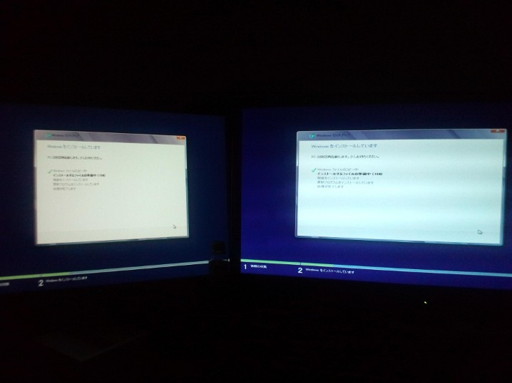
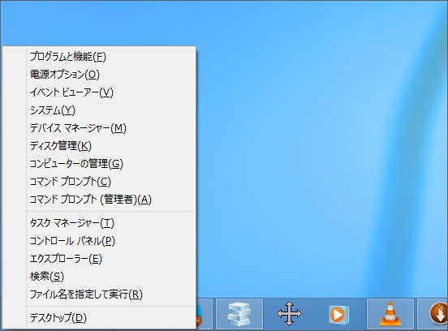

デスクトップで Windows 8 を使った雑感
公開日：

WebMatrix 2 のために OS を再インストールした - だるろぐ で、 Samsung Series 7 Slate に引き続いてメイン PC も Windows 8 になった*1。デスクトップではスレートほどの感動はないものの、不自由なく使えている。
ほんとは絶賛したいのだけれど、デスクトップとスレートで Microsoft ID を別にしているから、Windows 8 のウリである「リームレスなエクスペリエンス」（っぽい感じのヤツ！）を体験できずにいる。なので、今のところちょっと絶賛とまではいかない感じ。Windows 8 は複数の PC の設定や作業状況を同期できる機能をもち、デスクトップとモバイルで作業を中断せずに済む。
じゃぁ、なんでそんな素敵機能を使わないのか？
SkyDrive クライアントに同期対象のフォルダを制限する機能がないので……デスクトップで使っている ID でまるごと同期しちゃうと（25GB無料なので、15GBぐらい使っている）、スレートのストレージ（64GB）を食いつぶしてしまう。
まぁ、これはログイン用の Microsoft ID と、SkyDrive の Microsoft ID を分ければいいのかもしれないが……なんか不具合がでたら嫌だし、ちょっと躊躇している。うちの S7S、単なるテスト環境にとどまっていればよかったんだけど、最近はすっかりごろ寝 PC の座を iPad から奪ってしまっている。なので、この環境を壊すのがつらく、ついつい保守的になってしまう。
そのほかは、あまり世間で言うほどの不便は感じていない。むしろ便利になったぐらいだ。とくにマルチモニター関連機能と、スタートメニュ関連。後者に関しては前にも少し書いたので、もう繰り返すつもりはない（Metro デスクトップはでっかいスタートメニュー。死んだのはスタートメニューではなくマウス。 - だるろぐ）。
Metro*2 アプリ？ デスクトップで使いにくいと思うのなら、わざわざ使わんでもいいんじゃないかな！ スレートで Metro アプリをヘビーに使うようになった自分でも、デスクトップでは Metro アプリの出番が少ない。やっぱタッチ非対応＆マウス操作だとマウスの移動距離が延びるのがつらいね。わしはキーボードでできることはキーボードでやっちゃう派*3なのだけど、こればっかしはマウスに頼らないといけない。それに Metro アプリは現状、全般的に完成度が低く未成熟な感じを受ける*4。いずれ解決される問題だとは思うけれど……。
あと、Twitter で［Windows］＋［X］キーを活用するといいよ、と耳をしたのでやってみた。これは習熟する価値がある！

たとえば、［Windows］＋［X］→［A］キーで管理者権限付きのコマンドプロンプトを呼び出せる。これ、カスタマイズできたらいいのにな。
ただ、一つだけ困ったことがある。デスクトップに保存したショートカットで、IE 10 が開けなくなってしまった。あじゃじゃ。ブラウザーにショートカットをドラッグ＆ドロップしたら開けるのでそれで代用しているけれど、ちょっとめんどいな。